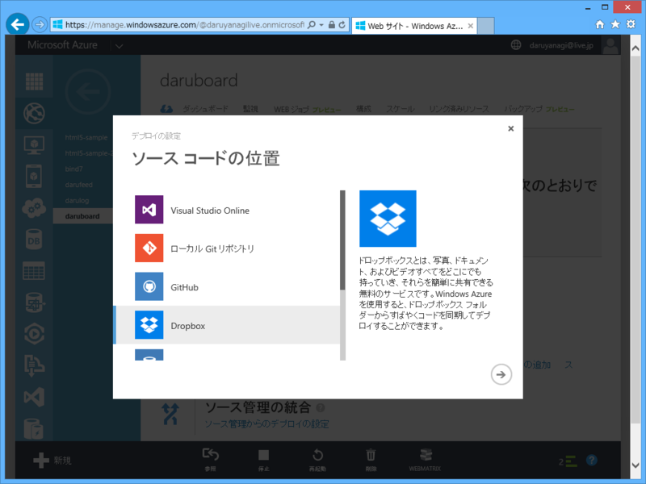
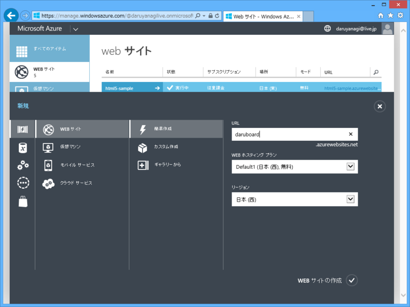
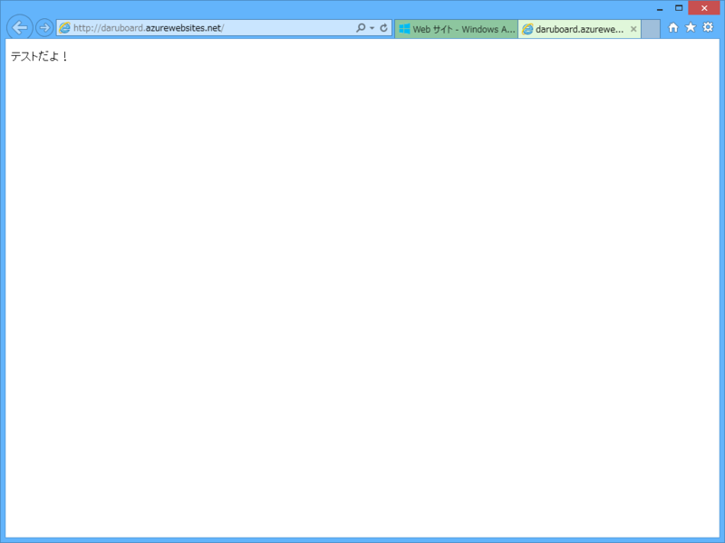

Dropbox ＋ Microsoft Azure でサイトを管理する
公開日：

Windows Microsoft Azure Web サイト（MAWS）では、Dropbox のフォルダーとコードを同期して、サイトをデプロイすることができます。
- 複数の環境でソースコードを同期しておきたい
- Git とかよくわかんねーけど、Dropbox なら毎日使ってるぜ
といったユーザーにお勧めかも。
サイトの作成

まず MAWS で新規サイトを作成してみました。［Web サイト］-［簡易作成］を選択し、

URL（サブドメイン）を決めるだけ（ほかはよくわからんのでそのままにした）。

できあがり。簡単すぎて鼻血が出そうでした。
Dropbox との連携
さっきの画面の下の方にある［ソース管理の統合］-［ソース管理からのデプロイの設定］を選択すると、どこに保存されているコードをサイトへデプロイするかが選べます。もちろん、今回は Dropbox を選択。

指示されるがままに Dropbox との連携処理を行うと……

なんかフォルダが作成されます。

確認してみると DROPBPBOX_ROOT\アプリ\Azure にサイトのフォルダがありますね（カタカナ！？）。これを WebMatrix でサイトとして開きます。で、なんでもいいので適当にファイルを置いてみてください。今回は“テストだよ！”と表示するだけの Default.cshtml をルートにおいています。

んで、サイトの管理画面（ブラウザー）に戻り、下の方にある［同期］ボタンを押してデプローイ！

無事サイトも動き出しました。
たぶん、デプロイってコマンドでもできるよね。静的ページ（動的なのでもいいけど）を Dropbox で管理して、コマンドでデプロイするようにすればいい感じかもしれない。